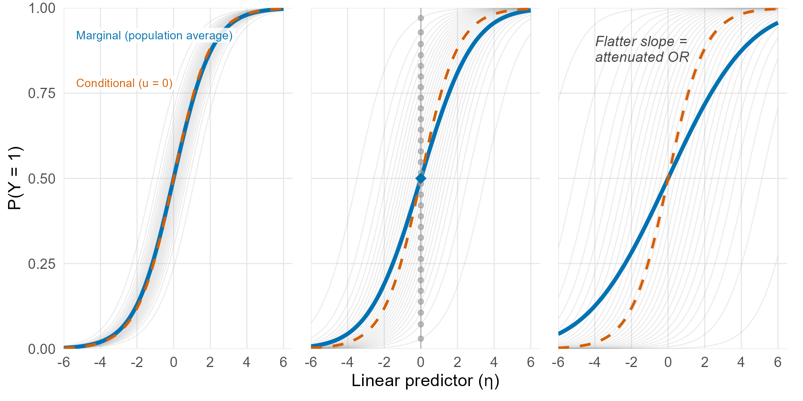

One of my burning passion lecture topics is the naming of things in statistics, or more specifically, the poor naming of things in statistics. Names often don't make sense, and are wrapped up in field-specific jargon, be it econometrics jargon, epidemiological jargon, or mathematical jargon. That all serves very well to make ourselves feel very clever for understanding at least some of these words, but doesn't really serve anyone else. Particularly when the concepts behind the words are more intuitive than the opaque names suggest.
Today I'm writing about two such words: marginal and conditional. These words are often bandied around in research conversations, with little care being set aside for what they mean, or how they differ. So I'm going to try and clear up that (and perhaps a little more).
The most prevalent example of this distinction, and my running example for the day, is a good old-fashioned logistic regression. If you've worked in quantitative research, you've probably done one. If you've taken a stats class, same. Even if you don't but you have a passing familiarity with quantitative research, I'm going to hazard a guess you've heard of an odds ratio (OR) before (odds ratios being the generally reported results of logistic regressions).
So here's two scenarios:
A) You run a logistic regression, regressing some binary outcome Y on some continuous predictor X. You get an OR relating to the effect of a 1-unit increase in X on the odds of Y being a 1 instead of a 0. You run another regression, this time adjusting for some covariate A. The OR associated with a 1-unit increase in X changes. But you have absolute theoretical certainty that covariate A is not at all associated with your predictor X. So how could it possibly change the estimated effect of X on Y? And which one was right?
B) You run a multilevel logistic regression (say, glmer in R or melogit in Stata) to account for some form of clustering, and you get an OR. Someone in the research team recently read about generalised estimating equations (GEEs) for addressing the same issue (clustered data). You run a GEE model with the same fixed effects and clustering structure, but the OR is substantially changed. Which one was right?
The same thing is happening in both scenarios, and I hope you'll forgive me but to explain why I'm going to invoke another overly technical word. What's happening in both scenarios is due to the odds ratio's non-collapsibility.
The fundamental principle is that in both scenarios, both ORs are correct; what's changed between them is the implicit research question being asked by each model. To demonstrate non-collapsibility at play, here's an example from Fitzmaurice, Laird and Ware's Applied Longitudinal Data Analysis:
An RCT is randomised across some stratified binary risk factor L, where the probability of getting condition Y based on treatment A & risk factor L can be expressed as:
| P(Y = 1 | A = 0) | P(Y = 1 | A = 1) | |
|---|---|---|
| L = 0 (low risk) | 0.20 | 0.50 |
| L = 1 (high risk) | 0.50 | 0.80 |
If we allocate 500 participants to each group at each risk level (2000 total), we would expect the following outcomes on average:
| L | A | Events | Non-events |
|---|---|---|---|
| 0 | 0 | 100 | 400 |
| 0 | 1 | 250 | 250 |
| 1 | 0 | 250 | 250 |
| 1 | 1 | 400 | 100 |
Within each level of L, we can manually calculate odds ratios with some quick arithmetic: OR = (250 × 400) / (100 × 250) = 4 when L = 0, and (400 × 250) / (250 × 100) = 4 when L = 1. So each within-strata OR is 4 (in each stratum, the odds of an intervention participant having an event is 4× that of a control participant).
When we collapse this table across strata, we get the following table:
| A | Events | Non-events |
|---|---|---|
| 0 | 350 | 650 |
| 1 | 650 | 350 |
So in our population, we can calculate the OR as (650 × 650) / (350 × 350) = 3.449...
Distinctly lower than 4, which it was in each stratum. Seems strange?
This is what non-collapsibility implies: for ORs, by collapsing the table, we are actually changing the question. In the collapsed table, we are asking a question about our whole population. This is our marginal question. In the stratified table we are asking a question about anyone within a given stratum. This is our conditional question. These are equivalent questions in a single, unadjusted logistic model, because the model cannot distinguish between members of the population beyond the predictor of interest. As soon as we incorporate anything which stratifies the population (covariates, or random effects introduced by clustering), the questions become distinct.
To demonstrate this in a more visual sense, and in a random-intercept clustered-data context, observe the following visualisation of three different clustered datasets with identical conditional ORs, but different levels of clustering.

As the clustering gets stronger (higher ICC, cluster-specific intercepts are more distinct), the blue curve (our marginal OR) flattens, but the red dotted curve (conditional OR) stays the same, as the OR within each cluster is the same. The marginal distribution is averaging all of the curves, and the more heterogeneous those curves are the flatter this "average curve" will necessarily become. This is due to the S-shaped nature of the curves. Averaging over S-shaped curves will always make a flatter curve, which in this context means pulling the OR towards 1. This is why marginal estimates will always be closer to an OR of 1 (i.e. a null effect) than the corresponding conditional effects.
The particular S-shaped curves of these probabilities are due to the mathematical transformation the probabilities undergo in a logistic regression — the logit link function. For some linear predictor $\eta$ (a weighted sum of the model terms), the logistic model says the probability of the outcome is $P = 1/(1 + \exp(-\eta))$. This is the inverse logit (or "expit") function, and it's what gives us those S-shaped curves. Logistic models make $\eta$ a linear function of the predictors — it's the log-odds that are linear, not the probability itself. In the language of generalised linear models, this transformation is the link function.
This is different in linear regression of continuous outcomes. If we take a linear regression model $Y = a + bX_1 + cX_2 + \ldots$, no combination of covariates will change the raw effect of a 1-unit increase in $X_1$ on $Y$ (the coefficient $b$). If, instead of modelling $Y$ directly, we model the log-odds of $Y$ through the logit link, then the effect of a 1-unit increase in $X$ on the log-odds doesn't depend on the covariates — but the effect of a 1-unit increase in $X$ on the probability itself does. This is all a property of a known inequality in probability, Jensen's inequality.
Jensen's inequality states that for any convex function $f$, $f(E[X]) \leq E[f(X)]$. Our S-curves are the inverse logit function, which is convex below its midpoint and concave above. When we average over a population whose individual curves are shifted up and down (by covariates, or by random effects), the averaging process interacts with this curvature. The result is that the averaged curve — our marginal estimate — is always flatter than any individual curve. The same idea explains our 2×2×2 table: computing the odds ratio from the pooled (averaged) probabilities gives a different answer than averaging the within-stratum odds ratios, because the odds function $p/(1-p)$ is itself convex. In keeping with the inequality, our conditional OR is always further from 1 than our marginal OR.